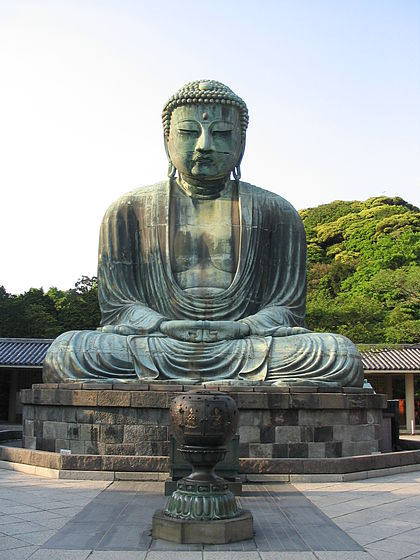

| WikipediA tiếng Việt |
Bạn chính là tác giả của Wikipedia!Mọi người đều có thể biên tập bài ngay lập tức, chỉ cần nhớ vài quy tắc. Có sẵn rất nhiều trang trợ giúp như tạo bài, sửa bài hay tải ảnh. Bạn cũng đừng ngại đặt câu hỏi. Hiện chúng ta có 1.155.960 bài viết và 542.701 thành viên. |
| Bài viết: Tìm kiếm • Tra cứu • Bài mới • Hỏi đáp • Thỉnh cầu | Trợ giúp: FAQ • Giúp đỡ • Sửa đổi • Chỗ thử • Guestbook • Thư viện Wikipedia |
Bài viết chọn lọcMặt Trời là ngôi sao ở trung tâm Hệ Mặt Trời, chiếm khoảng 99,86% khối lượng của Hệ Mặt Trời. Trái Đất và các thiên thể khác như các hành tinh, tiểu hành tinh, thiên thạch, sao chổi, và bụi quay quanh Mặt Trời. Khoảng cách trung bình giữa Mặt Trời và Trái Đất xấp xỉ 149,6 triệu kilômét (1 đơn vị thiên văn AU) nên ánh sáng Mặt Trời cần 8 phút 19 giây mới đến được Trái Đất. Trong một năm, khoảng cách này thay đổi từ 147,1 triệu kilômét ở điểm cận nhật (khoảng ngày 3 tháng 1), tới xa nhất là 152,1 triệu kilômét ở điểm viễn nhật (khoảng ngày 4 tháng 7). Năng lượng Mặt Trời ở dạng ánh sáng hỗ trợ cho hầu hết sự sống trên Trái Đất thông qua quá trình quang hợp, và điều khiển khí hậu cũng như thời tiết trên Trái Đất. Thành phần của Mặt Trời gồm hydro (khoảng 74% khối lượng, hay 92% thể tích), heli (khoảng 24% khối lượng, 7% thể tích), và một lượng nhỏ các nguyên tố khác, gồm sắt, nickel, oxy, silic, lưu huỳnh, magiê, carbon, neon, canxi, và crom. Mặt Trời có hạng quang phổ G2V. G2 có nghĩa nó có nhiệt độ bề mặt xấp xỉ 5.778 K (5.505 °C) khiến nó có màu trắng, và thường có màu vàng khi nhìn từ bề mặt Trái Đất bởi sự tán xạ khí quyển. Chính sự tán xạ này của ánh sáng ở giới hạn cuối màu xanh của quang phổ khiến bầu trời có màu xanh. Quang phổ Mặt Trời có chứa các đường ion hoá và kim loại trung tính cũng như các đường hydro rất yếu. |
Bạn có biết……là người thuận tay trái, diễn viên Bruce Willis phải học cách viết bằng tay phải khi đóng phim Giác quan thứ sáu? …kế vị người anh Mã Hy Phạm làm quân chủ nước Sở, Mã Hy Quảng sau đó lại lâm chiến với người anh khác là Mã Hy Ngạc và bị đại bại? …từng nổi tiếng với các phim hài, Jonathan Demme lại giành Giải Oscar cho đạo diễn xuất sắc nhất với một bộ phim kinh dị? …với bàn cờ vua có thể xoay được trong không gian ba chiều, Chess Titans giới thiệu khả năng 3D của Windows Vista? |
Tin tứcPuerto Rico nộp hồ sơ phá sản chính phủ lớn nhất từ trước đến nay ở Hoa Kỳ. Trung Quốc hạ thủy tàu sân bay đầu tiên được xây dựng trong nước. Thổ Nhĩ Kỳ ủng hộ việc thay đổi thể chế đại nghị của chính phủ thành tổng thống điều hành trong một cuộc trưng cầu hiến pháp. Một vụ đánh bom tự sát trên xe buýt di tản dân dụng gần Aleppo, Syria (hình) làm hơn 120 người thiệt mạng, trong đó có 68 trẻ em. |
|
Hình ảnh chọn lọc

Bức tượng Phật lớn (Daibutsu) tại thành phố Kamakura, Nhật Bản. Bức tượng A-di-đà này đúc bằng đồng với chiều cao 11 m và nặng 93 tấn, được cho là đúc xong từ năm 1252. |
Ngày này năm xưa5 tháng 5: Lập hạ (2017); Ngày Quốc vương đăng cơ tại Thái Lan; ngày Thiếu nhi tại Nhật Bản và Hàn Quốc. 1260 – Dưới sự ủng hộ của một bộ phận tông vương và đại thần, Hốt Tất Liệt tự lập làm hoàng đế của Đế quốc Mông Cổ. 1949 – Hiệp ước London thành lập Ủy hội châu Âu, thể chế đầu tiên hoạt động nhằm nhất thể hóa châu Âu. 1950 – Bhumibol Adulyadej (hình) đăng cơ quốc vương Thái Lan tại vương cung ở Bangkok. 1955 – Hiệp định Paris về chấm dứt chiếm đóng có hiệu lực, Cộng hòa Liên bang Đức, tức Tây Đức, giành được chủ quyền hoàn toàn. |